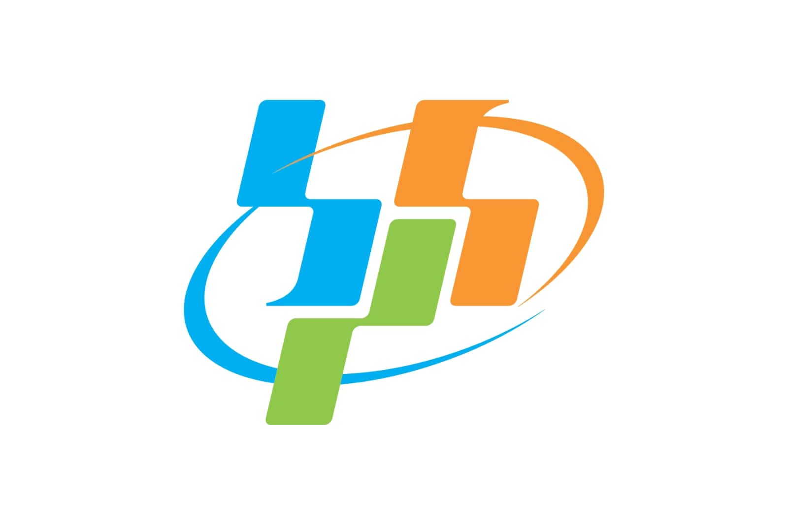
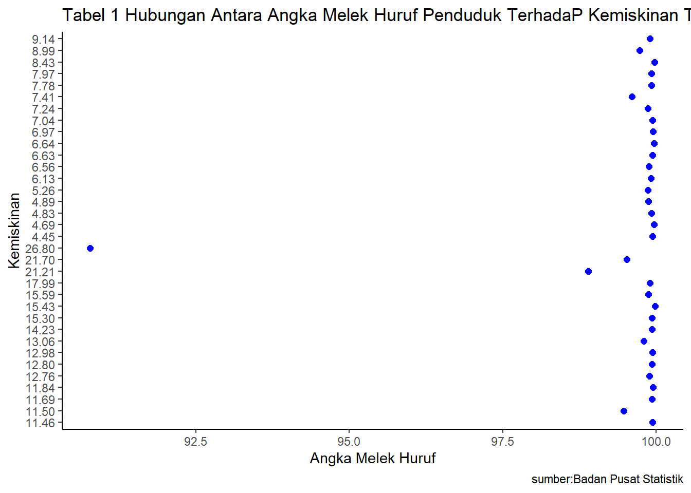

library(tidyverse)
library(readxl)
library(ggplot2)
library(dplyr)Hubungan Antara Angka Melek Huruf Penduduk Terhadap Kemiskinan Tahun 2020
Metode Penelitian Politeknik APP Jakarta

1 Pendahuluan
1.1 Latar belakang
Masalah kemiskinan adalah salah satu isu yang kompleks dan mendalam dalam pembangunan sosial dan ekonomi suatu negara. Kemiskinan tidak hanya berkaitan dengan kurangnya sumber daya material, tetapi juga memiliki dampak yang luas terhadap aspek sosial, kesehatan, pendidikan, dan kualitas hidup masyarakat. Untuk mengatasi masalah kemiskinan, penting untuk memahami faktor-faktor yang mempengaruhinya.
Salah satu faktor yang diketahui memiliki keterkaitan erat dengan kemiskinan adalah tingkat melek huruf penduduk. Angka melek huruf penduduk menggambarkan tingkat literasi dan pendidikan masyarakat. Tingkat melek huruf yang rendah dapat menghambat akses masyarakat terhadap peluang ekonomi, pekerjaan yang layak, dan keahlian yang diperlukan dalam era globalisasi dan kemajuan teknologi.
Kondisi yang dirasakan Indonesia, berdasarkan data yang ada menunjukkan terjadi tren peningkatan kasus positif baru Covid-19 di Indonesia. Hal tersebut terjadi pada saat awal terjadi pandemi Covid-19 di Indonesia tanggal 2 Maret 2020 sampai dengan terjadi lonjakan peningkatan kasus baru hingga 25 Juli 2021. Bahkan lonjakan paling tinggi kasus positif baru Covid-19 di Indonesia terjadi pada saat tanggal 15 Juli 2021.Pandemi ini telah berdampak signifikan pada berbagai aspek kehidupan, termasuk pada tingkat kemiskinan dan melek huruf penduduk. Pembatasan sosial, penutupan sekolah, dan penurunan aktivitas ekonomi telah mempengaruhi pendidikan dan kesempatan ekonomi masyarakat.
Dalam konteks ini, penting untuk melakukan analisis yang mendalam tentang hubungan antara angka melek huruf penduduk dengan tingkat kemiskinan pada tahun 2020. Analisis ini akan memberikan pemahaman yang lebih baik tentang bagaimana tingkat literasi dan pendidikan dapat mempengaruhi tingkat kemiskinan di tengah krisis global seperti pandemi COVID-19.
Studi sebelumnya telah menunjukkan bahwa tingkat melek huruf yang tinggi dapat berkontribusi pada peningkatan kualitas hidup dan potensi ekonomi masyarakat. Masyarakat yang melek huruf memiliki pengetahuan dan keterampilan yang lebih baik untuk berpartisipasi dalam sektor formal ekonomi, mengakses informasi dan layanan publik, serta mengembangkan usaha mikro dan kecil. Oleh karena itu, meningkatkan angka melek huruf penduduk dapat menjadi strategi penting dalam mengurangi tingkat kemiskinan.
Namun, dalam realitas yang kompleks, hubungan antara angka melek huruf penduduk dengan kemiskinan tidaklah sederhana. Faktor-faktor lain, seperti kesenjangan pendapatan, akses terhadap pekerjaan yang layak, dan kebijakan pemerintah juga berperan dalam menentukan tingkat kemiskinan. Oleh karena itu, diperlukan analisis yang komprehensif dan metode penelitian yang tepat untuk memahami hubungan ini secara lebih baik.
Melalui penelitian yang mendalam tentang hubungan antara angka melek huruf penduduk dengan kemiskinan tahun 2020, diharapkan dapat memberikan pemahaman yang lebih baik tentang dinamika dan faktor-faktor yang mempengaruhi kemiskinan dalam konteks yang khusus. Temuan penelitian ini dapat berkontribusi pada pengembangan kebijakan dan program yang lebih efektif dalam upaya mengurangi kemiskinan dan meningkatkan literasi penduduk.
1.2 Ruang lingkup
Ruang lingkup pembahasan dalam penelitian ini akan difokuskan pada variabel yang relevan untuk analisis, yakni hubungan antara Angka Melek Huruf Penduduk dan Tingkat Kemiskinan pada tahun 2020. Batasan masalah ini memiliki peran penting dalam mengidentifikasi isu-isu yang akan dibahas dan membatasi cakupan dari proses penelitian yang dilakukan.
1.3 Rumusan masalah
1.Bagaimana hubungan antara Angka Melek Huruf Penduduk dengan tingkat kemiskinan pada tahun 2020? 2.Apa dampak pandemi COVID-19 terhadap Angka Melek Huruf Penduduk dan bagaimana dampak tersebut mempengaruhi tingkat kemiskinan?
1.4 Tujuan dan manfaat penelitian
Penelitian ini bertujuan menganalisis hubungan Angka Melek Huruf Penduduk dengan tingkat kemiskinan tahun 2020, terutama dalam konteks dampak pandemi COVID-19. Fokus penelitian juga mencakup pemahaman peran literasi dalam mengatasi tantangan ekonomi pasca-pandemi, mengeksplorasi variabilitas hubungan antardaerah, dan mengidentifikasi faktor-faktor modifikasi. Manfaatnya melibatkan kontribusi teoritis, informasi praktis untuk pembuat kebijakan, dan dasar bagi pengembangan program intervensi pendidikan dan ekonomi. Penelitian ini khususnya memberikan wawasan mendalam tentang dampak pandemi pada literasi dan kemiskinan, serta memungkinkan perbandingan regional untuk adaptasi kebijakan yang sesuai dengan karakteristik wilayah.
1.5 Package
Ini tidak wajib ada di tulisan anda tapi anda dapat menunjukkan Packages yang digunakan antara lain sebagai berikut:
2 Studi pustaka
Menurut Hall dan Midgley pengertian kemiskinan adalah kondisi deprivasi materi dan sosial yang menyebabkan individu hidup di bawah standar kehidupan yang layak, atau kondisi di mana individu mengalami deprivasi relatif dibandingkan dengan individu yang lainnya dalam masyarakat.
3 Metode penelitian
3.1 Data
Data yang saya gunakan berupa Angka Melek Huruf dan provinsi terkait
dan juga Data Jumlah Penduduk Miskin di provinsi yang terkait
| Provinsi | Angka Melek Huruf | Angka Kemiskinan |
|---|---|---|
| ACEH | 99.98 | 15.43 |
| SUMATERA UTARA | 99.9 | 9.14 |
| SUMATERA BARAT | 99.88 | 6.56 |
| RIAU | 99.94 | 7.04 |
| JAMBI | 99.92 | 7.97 |
| SUMATERA SELATAN | 99.94 | 12.98 |
| BENGKULU | 99.93 | 15.30 |
| LAMPUNG | 99.89 | 12.76 |
| KEP.BANGKA BELITUNG | 99.87 | 4.89 |
| KEP.RIAU | 99.91 | 6.13 |
| DKI JAKARTA | 99.96 | 4.69 |
| JAWA BARAT | 99.97 | 8.43 |
| JAWA TENGAH | 99.95 | 11.84 |
| DI YOGYAKARTA | 99.93 | 12.80 |
| JAWA TIMUR | 99.94 | 11.46 |
| BANTEN | 99.94 | 6.63 |
| BALI | 99.94 | 4.45 |
| NUSA TENGGARA BARAT | 99.93 | 14.23 |
| NUSA TENGGARA TIMUR | 98.89 | 21.21 |
| KALIMANTAN BARAT | 99.86 | 7.24 |
| KALIMANTAN TENGAH | 99.86 | 5.26 |
| KALIMANTAN SELATAN | 99.92 | 4.83 |
| KALIMANTAN TIMUR | 99.96 | 6.64 |
| KALIMANTAN UTARA | 99.6 | 7.41 |
| SULAWESI UTARA | 99.92 | 7.78 |
| SULAWESI TENGAH | 99.8 | 13.06 |
| SULAWESI SELATAN | 99.73 | 8.99 |
| SULAWESI TENGGARA | 99.93 | 11.69 |
| GORONTALO | 99.87 | 15.59 |
| SULAWESI BARAT | 99.47 | 11.50 |
| MALUKU | 99.9 | 17.99 |
| MALUKU UTARA | 99.95 | 6.97 |
| PAPUA BARAT | 99.52 | 21.70 |
| PAPUA | 90.78 | 26.80 |

penelitian ini menggunakan data yang bersumber dari Badan Pusat Statistik (BPS)
Baca Data
library("readxl")
dat<-read_excel("melekhuruf.xlsx")
head(dat)# A tibble: 6 × 2
x y
<dbl> <chr>
1 100. 15.43
2 99.9 9.14
3 99.9 6.56
4 99.9 7.04
5 99.9 7.97
6 99.9 12.98library("ggplot2")
library("dplyr")
ggplot(data=dat,aes(x=x,y=y))+
geom_point(color="blue",size=2)+
labs(title="Tabel 1 Hubungan Antara Angka Melek Huruf Penduduk TerhadaP Kemiskinan Tahun 2020",
x="Angka Melek Huruf",
y="Kemiskinan",
caption="sumber:Badan Pusat Statistik")+
theme_classic()
3.2 Metode Analisis
Metode yang dipilih adalah regresi univariat atau Ordinary Least Square (OLS) dengan 1 variabel independen. Penelitian ini bermaksud mencari hubungan antara Angka Melek Huruf dan Kemiskinan. Spesifikasi yang dilakukan adalah:
\[ y_{t}=\beta_0 + \beta_1 x_t+\mu_t\] di mana \(y_t\) adalah kemiskinan dan \(x_t\) adalah angka melek huruf.
4 Pembahasan
4.1 Pembahasan masalah
Dikarenakan saya menggunakan OLS, Pembahasan saya disini hanya menghubungkan Angka Melek Huruf dan kemiskinan. Data tersebut saya satukan untuk saya regresi dan tampilannya seperti ini.
library("readxl")
dat<-read_excel("melekhuruf.xlsx")
head(dat)# A tibble: 6 × 2
x y
<dbl> <chr>
1 100. 15.43
2 99.9 9.14
3 99.9 6.56
4 99.9 7.04
5 99.9 7.97
6 99.9 12.984.2 Analisis masalah
Hasil regresinya adalah
reg1<-lm(y~x,data=dat)
summary(reg1)
Call:
lm(formula = y ~ x, data = dat)
Residuals:
Min 1Q Median 3Q Max
-5.643 -3.398 -1.444 2.690 10.778
Coefficients:
Estimate Std. Error t value Pr(>|t|)
(Intercept) 207.3227 49.8422 4.160 0.000223 ***
x -1.9735 0.5005 -3.943 0.000411 ***
---
Signif. codes: 0 '***' 0.001 '**' 0.01 '*' 0.05 '.' 0.1 ' ' 1
Residual standard error: 4.509 on 32 degrees of freedom
Multiple R-squared: 0.327, Adjusted R-squared: 0.306
F-statistic: 15.55 on 1 and 32 DF, p-value: 0.00041075 Kesimpulan
Model regresi menegaskan hubungan signifikan antara angka melek huruf penduduk (x) dan tingkat kemiskinan (y) pada tahun 2020. Dengan ŷ=207.3227−1.9735\(x\), setiap kenaikan satu unit dalam angka melek huruf penduduk menyebabkan penurunan rata-rata 1.9735 unit dalam tingkat kemiskinan. Koefisien estimasi yang signifikan dan p-value rendah pada F-statistic (15.55, p-value: 0.0004107) menunjukkan bahwa model secara keseluruhan memberikan kontribusi yang berarti dalam menjelaskan variasi dalam tingkat kemiskinan.
6 Referensi
BPS Provinsi Jawa Timur. (t.t.). Diambil 11 Januari 2024, dari https://jatim.bps.go.id/indicator/23/344/2/persentase-penduduk-miskin-menurut-provinsi-.html
Di Tengah Pandemi, Angka Kemiskinan Meninggi | Indonesia Baik. (t.t.). Diambil 11 Januari 2024, dari https://indonesiabaik.id/infografis/di-tengah-pandemi-angka-kemiskinan-meninggi